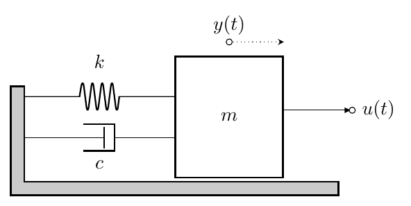
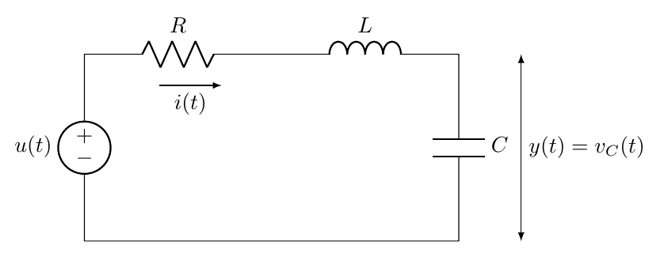
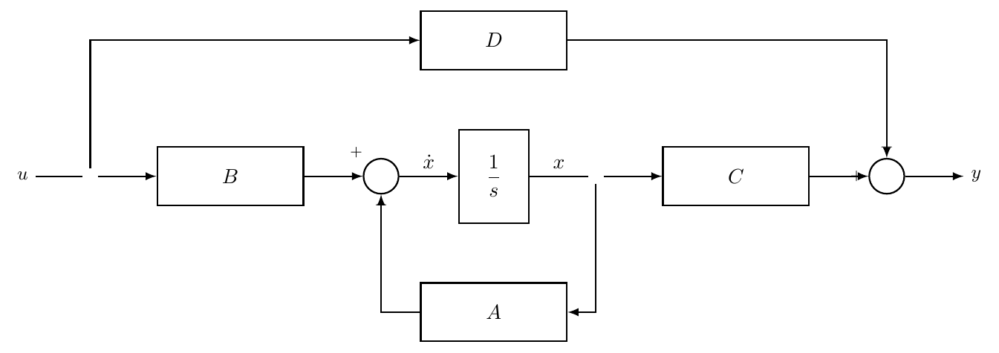
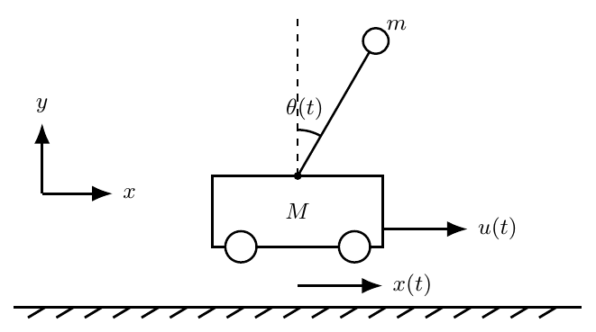
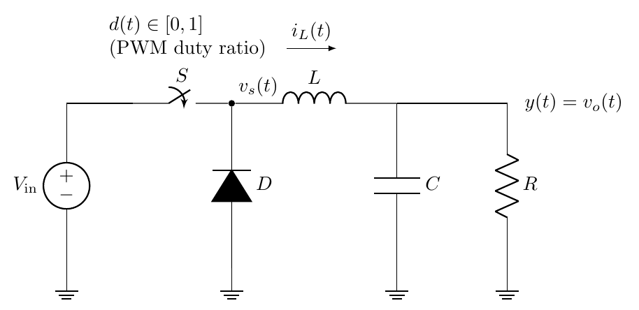
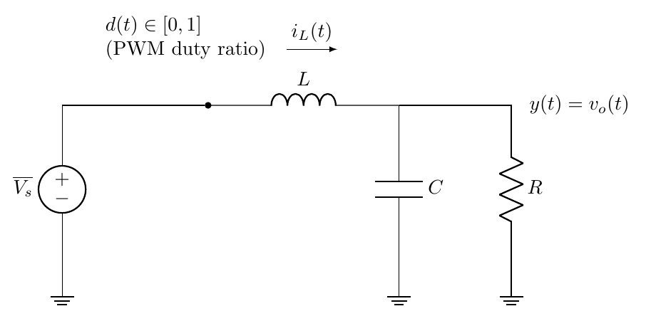
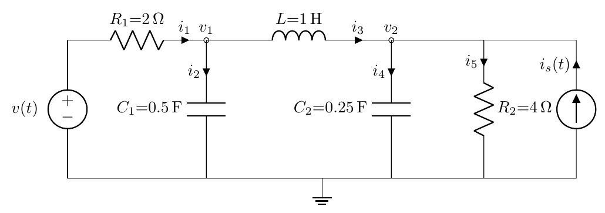
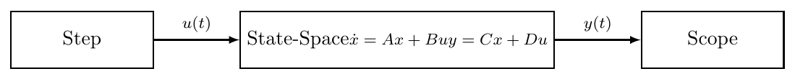

Learning Objectives After completing this chapter, you should be able to:
Explain why state-space models are used instead of (or alongside) transfer functions
Identify state variables for mechanical, electrical, and thermal systems
Convert higher-order ODEs into first-order state-space form \(\dot{x}=Ax+Bu\), \(y=Cx+Du\)
Derive state-space models from physical system equations, including coupled and nonlinear systems
Compute the transfer function from a state-space model using \(G(s)=C(sI-A)^{-1}B+D\)
Create, simulate, and convert state-space models in MATLAB using ss, tf, lsim, and related commands
Earlier chapters described dynamic systems using differential equations and transfer functions. Transfer functions are a powerful tool for analysing linear time-invariant systems, but they emphasise input–output behaviour and can be awkward to use for systems with multiple inputs and outputs or when the internal dynamics matter.
Modern control therefore often uses the state space, which models a system through a set of state variables that summarise its internal condition (or memory) at a given time. The collection of these variables forms the state vector \[x(t)= \begin{bmatrix} x_1(t)\\ x_2(t)\\ \vdots\\ x_n(t) \end{bmatrix}.\] A key idea is that, given the current state \(x(t_0)\) and the input \(u(t)\) for \(t\ge t_0\), the future behaviour of the system is determined.
For a linear time-invariant system, the state-space model is written as two matrix equations. The state equation describes how the state evolves, \[\dot{x}(t)=Ax(t)+Bu(t),\] and the output equation relates the state to the measured output, \[y(t)=Cx(t)+Du(t).\] The matrices \(A\), \(B\), \(C\), and \(D\) capture the system dynamics and how the input influences both the state and the output.
Transfer functions are particularly convenient for frequency-domain input–output analysis. However, they do not explicitly encode the system’s internal dynamics, and extending the framework beyond SISO systems can be cumbersome. Many modelling and control tasks are also most naturally stated in terms of time-domain state trajectories and constraints.
The state-space approach resolves these issues by introducing a vector of state variables and rewriting the dynamics as a set of coupled first-order differential equations. This formulation
makes the internal behaviour explicit,
extends naturally to multi-input multi-output systems,
is well suited to simulation and digital implementation, and
underpins modern analysis and design techniques such as linear quadratic control, model predictive control, and sliding mode control.
More formally, the state of a system at time \(t_0\) is defined as the minimum set of variables such that knowledge of these variables at \(t_0\), together with the input \(u(t)\) for \(t \geq t_0\), uniquely determines the system’s future response.
If \(n\) state variables are required, they are typically denoted by \(x_1(t), x_2(t), \dots, x_n(t)\) and collected into the state vector \[x(t)= \begin{bmatrix} x_1(t)\\ x_2(t)\\ \vdots\\ x_n(t) \end{bmatrix}\in\mathbb{R}^{n}.\] The number of state variables \(n\) is called the order of the system. For a single-input single-output linear system described by an \(n\)th-order ordinary differential equation, the state dimension is typically \(n\).
Different (but equivalent) state choices are possible for the same physical system. A good choice typically:
uses physically meaningful variables (often energy-storing quantities),
leads to a compact first-order model,
aligns with what can be measured or estimated in practice.
In practice, when you write the dynamic (motion/energy-balance) equations of a physical system, the variables whose derivatives appear are natural candidates for the state variables. The state vector is then formed by collecting these variables (often energy-storing quantities) and rewriting the model as a set of first-order differential equations.
A recurring step in state–space modelling is to convert higher-order dynamics into an equivalent first-order form by defining appropriate states. The next three examples illustrate the process for mechanical, electrical, and thermal systems.
Consider a translational mass–spring–damper system shown in Figure 1.1 driven by an external force \(u(t)\), with displacement \(y(t)\): \[\begin{equation} m\ddot y(t) + c\dot y(t) + k y(t) = u(t). \label{eq:msd-ode} \end{equation}\] The derivatives in [eq:msd-ode] suggest selecting displacement and velocity as states: \[x_1(t)=y(t),\qquad x_2(t)=\dot y(t).\] Then \(\dot x_1(t)=x_2(t)\) and, rearranging [eq:msd-ode], \[\dot x_2(t)=\ddot y(t)= -\frac{k}{m}x_1(t) - \frac{c}{m}x_2(t) + \frac{1}{m}u(t).\] Hence the mechanical dynamics can be written in state form as \[\dot x(t)= \begin{bmatrix} 0 & 1\\ -\frac{k}{m} & -\frac{c}{m} \end{bmatrix}x(t)+ \begin{bmatrix} 0\\[2pt] \frac{1}{m} \end{bmatrix}u(t), \qquad y(t)= \begin{bmatrix} 1 & 0 \end{bmatrix}x(t),\] where \(x=[x_1\;x_2]^\top\).

Consider a series RLC circuit shown in Figure 1.2 driven by an input voltage \(u(t)\), and let the output be the capacitor voltage \(y(t)=v_C(t)\).
(0,0) to[V, l=\(u(t)\), invert] (0,3) to[R, l=\(R\)] (3,3) to[L, l=\(L\)] (6,3) to[C, l=\(C\)] (6,0) – (0,0);
(7,3) – (7,0) node[midway, above, right] \(y(t)=v_C(t)\);
(1.2,2.5) – (2.2,2.5) node[midway, below] \(i(t)\);

With series current \(i(t)\), KVL gives \[\begin{equation} u(t)=v_R(t)+v_L(t)+v_C(t)=R i(t)+L\dot i(t)+v_C(t), \label{eq:rlc-kvl} \end{equation}\] and the capacitor relation is \[\begin{equation} i(t)=C\dot v_C(t). \label{eq:cap} \end{equation}\] Here the energy-storing elements are the inductor and capacitor, so a standard choice of states is \[x_1(t)=v_C(t),\qquad x_2(t)=i(t).\] From [eq:cap] we obtain \[\dot x_1(t)=\dot v_C(t)=\frac{1}{C}i(t)=\frac{1}{C}x_2(t).\] From [eq:rlc-kvl] we solve for \(\dot i(t)\): \[L\dot i(t)=u(t)-R i(t)-v_C(t) \quad\Rightarrow\quad \dot x_2(t)= -\frac{1}{L}x_1(t)-\frac{R}{L}x_2(t)+\frac{1}{L}u(t).\] Thus the electrical dynamics are \[\dot x(t)= \begin{bmatrix} 0 & \frac{1}{C}\\[2pt] -\frac{1}{L} & -\frac{R}{L} \end{bmatrix}x(t)+ \begin{bmatrix} 0\\[2pt] \frac{1}{L} \end{bmatrix}u(t), \qquad y(t)= \begin{bmatrix} 1 & 0 \end{bmatrix}x(t),\] with \(x=[x_1\;x_2]^\top=[v_C\; i]^\top\).
Consider a single lumped thermal mass with temperature \(T(t)\), thermal capacity \(C_{\mathrm{th}}\), and heat loss to ambient temperature \(T_a\) through thermal resistance \(R_{\mathrm{th}}\). Let the input be applied heat rate \(u(t)\) (W). An energy balance gives \[\begin{equation} C_{\mathrm{th}}\dot T(t)= -\frac{1}{R_{\mathrm{th}}}\bigl(T(t)-T_a\bigr)+u(t). \label{eq:thermal-balance} \end{equation}\] This model is already first-order, so a natural state choice is the temperature: \[x_1(t)=T(t).\] Then [eq:thermal-balance] becomes \[\dot x_1(t)= -\frac{1}{C_{\mathrm{th}}R_{\mathrm{th}}}x_1(t) +\frac{1}{C_{\mathrm{th}}R_{\mathrm{th}}}T_a +\frac{1}{C_{\mathrm{th}}}u(t).\] If \(T_a\) is constant, it can be treated as a known bias term; alternatively, one may model \((T-T_a)\) as the state. With output \(y(t)=T(t)\), we have \(y(t)=x_1(t)\).
The state-space representation expresses a dynamic system as a set of first-order differential equations together with an algebraic output relation. It extends naturally to multiple-input multiple-output (MIMO) systems.
Throughout this chapter we consider continuous-time linear time-invariant (LTI) systems and use the notation \[x(t)\in\mathbb{R}^{n},\qquad u(t)\in\mathbb{R}^{m},\qquad y(t)\in\mathbb{R}^{p}.\] In this module we will mainly focus on the single-input single-output (SISO) case, i.e. \(m=1\) and \(p=1\), but the formulas are presented in the general form to keep the notation consistent with modern control texts.
The state equation describes how the internal state evolves over time. For a continuous-time LTI system it is written as \[\begin{equation} \dot{x}(t)=Ax(t)+Bu(t), \label{eq:state-equation} \end{equation}\] where \[A\in\mathbb{R}^{n\times n},\qquad B\in\mathbb{R}^{n\times m}.\] The matrix \(A\) is called the state matrix (or system matrix) and captures the intrinsic dynamics of the system (how the state evolves when \(u(t)=0\)). The matrix \(B\) is the input matrix and determines how the input drives the state.
For a continuous-time model, the state equation is always first order in time. Higher-order dynamics are represented by increasing the dimension \(n\) of the state vector.
In practice, [eq:state-equation] is obtained by selecting states and rewriting the original governing equations (often higher-order ODEs) as a set of coupled first-order equations, as shown in the earlier mechanical, electrical, and thermal examples.
The output equation specifies which variables are measured or of interest as outputs, and how they depend on the state and input: \[\begin{equation} y(t)=Cx(t)+Du(t), \label{eq:output-equation} \end{equation}\] where \[C\in\mathbb{R}^{p\times n},\qquad D\in\mathbb{R}^{p\times m}.\] The matrix \(C\) is the output matrix: it selects and combines state variables to form the outputs. The matrix \(D\) is the feedthrough (or direct transmission) matrix: it represents any instantaneous effect of the input on the output.
If \(D\neq 0\), then the output depends instantaneously on the input. Many physical systems have \(D=0\), but direct feedthrough can arise when the measured output includes a component of the input (for example, certain sensor/actuator models).
For the SISO case used most often in this module, \(y(t)\in\mathbb{R}\) and [eq:output-equation] becomes \[y(t)=Cx(t)+Du(t),\qquad C\in\mathbb{R}^{1\times n},\ \ D\in\mathbb{R}.\]
Equations [eq:state-equation]–[eq:output-equation] together define the state-space model: \[\begin{equation} \begin{aligned} \dot{x}(t) &= Ax(t)+Bu(t),\\ y(t) &= Cx(t)+Du(t). \end{aligned} \label{eq:ss-compact} \end{equation}\]
We state the general multi-input multi-output (MIMO) case first: \[x(t)\in\mathbb{R}^{n},\qquad u(t)\in\mathbb{R}^{m},\qquad y(t)\in\mathbb{R}^{p},\] with \[A\in\mathbb{R}^{n\times n},\quad B\in\mathbb{R}^{n\times m},\quad C\in\mathbb{R}^{p\times n},\quad D\in\mathbb{R}^{p\times m}.\]
To make the structure explicit, write the vectors and matrices in terms of their entries: \[x(t)= \begin{bmatrix} x_1(t)\\ x_2(t)\\ \vdots\\ x_n(t) \end{bmatrix}, \qquad u(t)= \begin{bmatrix} u_1(t)\\ u_2(t)\\ \vdots\\ u_m(t) \end{bmatrix}, \qquad y(t)= \begin{bmatrix} y_1(t)\\ y_2(t)\\ \vdots\\ y_p(t) \end{bmatrix}.\]
\[A= \begin{bmatrix} a_{11} & a_{12} & \cdots & a_{1n}\\ a_{21} & a_{22} & \cdots & a_{2n}\\ \vdots & \vdots & \ddots & \vdots\\ a_{n1} & a_{n2} & \cdots & a_{nn} \end{bmatrix}, \qquad B= \begin{bmatrix} b_{11} & b_{12} & \cdots & b_{1m}\\ b_{21} & b_{22} & \cdots & b_{2m}\\ \vdots & \vdots & \ddots & \vdots\\ b_{n1} & b_{n2} & \cdots & b_{nm} \end{bmatrix},\] \[C= \begin{bmatrix} c_{11} & c_{12} & \cdots & c_{1n}\\ c_{21} & c_{22} & \cdots & c_{2n}\\ \vdots & \vdots & \ddots & \vdots\\ c_{p1} & c_{p2} & \cdots & c_{pn} \end{bmatrix}, \qquad D= \begin{bmatrix} d_{11} & d_{12} & \cdots & d_{1m}\\ d_{21} & d_{22} & \cdots & d_{2m}\\ \vdots & \vdots & \ddots & \vdots\\ d_{p1} & d_{p2} & \cdots & d_{pm} \end{bmatrix}.\]
With this notation, the \(i\)th component of the state equation is \[\dot{x}_i(t)=\sum_{j=1}^{n} a_{ij}\,x_j(t) \;+\; \sum_{\ell=1}^{m} b_{i\ell}\,u_\ell(t), \qquad i=1,\dots,n,\] and the \(r\)th component of the output equation is \[y_r(t)=\sum_{j=1}^{n} c_{rj}\,x_j(t) \;+\; \sum_{\ell=1}^{m} d_{r\ell}\,u_\ell(t), \qquad r=1,\dots,p.\]
We present the state-space equations in the general MIMO form because the notation is standard in modern control. However, in this module we will primarily focus on the single-input single-output (SISO) case, where \(m=1\) and \(p=1\).
For SISO, \(u(t)\in\mathbb{R}\) and \(y(t)\in\mathbb{R}\), so \(B\in\mathbb{R}^{n\times 1}\), \(C\in\mathbb{R}^{1\times n}\), and \(D\in\mathbb{R}\), and [eq:ss-compact] becomes \[\dot{x}(t)=Ax(t)+Bu(t),\qquad y(t)=Cx(t)+Du(t).\] Figure 1.3 shows the signal flow diagram for a state-space system.

System and modelling assumptions. Consider the two-degree-of-freedom translational system in Fig. 1.4. Let \(x_1(t)\) and \(x_2(t)\) denote the displacements of masses \(m_1\) and \(m_2\) from their equilibrium positions (positive to the right). The input is the external force \(u(t)=F(t)\) applied to \(m_1\). Springs are linear with stiffness \(k_1,k_2,k_3\), and the damper between the masses is viscous with coefficient \(b\).
Step 1: Write Newton’s second law for each mass. Forces on \(m_1\) (all terms with negative sign are forces opposing the positive direction of motion trying to slow down the mass):
Spring to the left wall: \(-k_1 x_1\)
Coupling spring: \(-k_2(x_1-x_2)\)
Coupling damper: \(-b(\dot x_1-\dot x_2)\)
External input: \(+u\)
Hence, \[\begin{equation} m_1 \ddot x_1 = -k_1 x_1 - k_2(x_1-x_2) - b(\dot x_1-\dot x_2) + u. \label{eq:2mass-eom1} \end{equation}\]
Forces on \(m_2\):
Spring to the right wall: \(-k_3 x_2\)
Coupling spring: \(-k_2(x_2-x_1)\)
Coupling damper: \(-b(\dot x_2-\dot x_1)\)
Hence, \[\begin{equation} m_2 \ddot x_2 = -k_3 x_2 - k_2(x_2-x_1) - b(\dot x_2-\dot x_1). \label{eq:2mass-eom2} \end{equation}\]
Step 2: Choose states suggested by the derivatives. A standard choice is displacement and velocity for each mass: \[z_1=x_1,\quad z_2=\dot x_1,\quad z_3=x_2,\quad z_4=\dot x_2, \qquad z=\begin{bmatrix}z_1&z_2&z_3&z_4\end{bmatrix}^\top.\]
Step 3: Rewrite the dynamics as first-order equations. By definition, \[\dot z_1 = z_2,\qquad \dot z_3 = z_4.\] From [eq:2mass-eom1]–[eq:2mass-eom2], \[\begin{align} \dot z_2 &= \ddot x_1 = -\frac{k_1+k_2}{m_1}z_1 - \frac{b}{m_1}z_2 + \frac{k_2}{m_1}z_3 + \frac{b}{m_1}z_4 + \frac{1}{m_1}u, \label{eq:2mass-z2}\\[4pt] \dot z_4 &= \ddot x_2 = \frac{k_2}{m_2}z_1 + \frac{b}{m_2}z_2 - \frac{k_2+k_3}{m_2}z_3 - \frac{b}{m_2}z_4. \label{eq:2mass-z4} \end{align}\]
Step 4: Assemble the state-space model. Collecting [eq:2mass-z2]–[eq:2mass-z4] with \(\dot z_1=z_2\) and \(\dot z_3=z_4\) gives \[\dot z = Az + Bu,\] where \[A= \begin{bmatrix} 0 & 1 & 0 & 0\\[2pt] -\frac{k_1+k_2}{m_1} & -\frac{b}{m_1} & \frac{k_2}{m_1} & \frac{b}{m_1}\\[6pt] 0 & 0 & 0 & 1\\[2pt] \frac{k_2}{m_2} & \frac{b}{m_2} & -\frac{k_2+k_3}{m_2} & -\frac{b}{m_2} \end{bmatrix}, \qquad B= \begin{bmatrix} 0\\[2pt] \frac{1}{m_1}\\[2pt] 0\\[2pt] 0 \end{bmatrix}.\]
Step 5: Define the output equation. The measured output depends on the application. Two common choices are:
displacement of the first mass: \(y=x_1=z_1\), giving \[y = Cz + Du,\quad C=\begin{bmatrix}1&0&0&0\end{bmatrix},\quad D=0;\]
both displacements (a MIMO output): \(y=\begin{bmatrix}x_1&x_2\end{bmatrix}^\top=\begin{bmatrix}z_1&z_3\end{bmatrix}^\top\), giving \[C=\begin{bmatrix}1&0&0&0\\0&0&1&0\end{bmatrix},\quad D=\begin{bmatrix}0\\0\end{bmatrix}.\]
For mechanical systems, the state variables are typically the quantities whose derivatives appear in the equations of motion. Practically, once you have the dynamic equations, a reliable default is: choose each displacement as a state, and each corresponding velocity as its derivative state, then rewrite the model as a first-order system.
System description. Consider a cart of mass \(M\) moving horizontally with position \(x(t)\), carrying a rigid pendulum of mass \(m\) and length \(\ell\) (distance from pivot to centre of mass). Let \(\theta(t)\) be the pendulum angle measured from the upright vertical (so \(\theta=0\) is the unstable upright equilibrium). The input is a horizontal force \(u(t)\) applied to the cart. Viscous friction on the cart is modelled by a coefficient \(d\ge 0\).
Step 1: Equations of motion (coupled second-order ODEs). A standard nonlinear model is \[\begin{align} (M+m)\ddot x + d\,\dot x + m\ell\ddot\theta\cos\theta - m\ell\dot\theta^{2}\sin\theta &= u, \label{eq:cp-eom1}\\ m\ell^{2}\ddot\theta + m\ell\ddot x\cos\theta &= m g \ell \sin\theta. \label{eq:cp-eom2} \end{align}\]
Step 2: Choose states suggested by the derivatives. Select cart position/velocity and pendulum angle/angular velocity: \[z_1=x,\quad z_2=\dot x,\quad z_3=\theta,\quad z_4=\dot\theta, \qquad z=\begin{bmatrix}z_1&z_2&z_3&z_4\end{bmatrix}^\top.\] Then \(\dot z_1=z_2\) and \(\dot z_3=z_4\). It remains to express \(\dot z_2=\ddot x\) and \(\dot z_4=\ddot\theta\).
Step 3: Solve [eq:cp-eom1]–[eq:cp-eom2] for \(\ddot x\) and \(\ddot\theta\). Rewrite the dynamics as a linear system in the unknown accelerations: \[\underbrace{\begin{bmatrix} M+m & m\ell\cos z_3\\ m\ell\cos z_3 & m\ell^2 \end{bmatrix}}_{=: \; \mathcal{M}(z_3)} \begin{bmatrix} \ddot x\\ \ddot\theta \end{bmatrix} = \begin{bmatrix} u - d z_2 + m\ell z_4^2\sin z_3\\ m g \ell \sin z_3 \end{bmatrix}.\] Define the determinant (non-zero for typical parameter values and away from singular configurations) \[\Delta(z_3)=\det\mathcal{M}(z_3)=m\ell^2\bigl(M+m-m\cos^2 z_3\bigr).\] Using the \(2\times 2\) inverse formula, \[\mathcal{M}(z_3)^{-1}=\frac{1}{\Delta(z_3)} \begin{bmatrix} m\ell^2 & -m\ell\cos z_3\\ -m\ell\cos z_3 & M+m \end{bmatrix}.\]
Hence, \[\begin{align} \ddot x &= \frac{1}{\Delta(z_3)}\Bigl( m\ell^2\bigl[u-d z_2 + m\ell z_4^2\sin z_3\bigr] - m\ell\cos z_3 \cdot m g \ell \sin z_3 \Bigr), \label{eq:cp-xdd}\\[4pt] \ddot\theta &= \frac{1}{\Delta(z_3)}\Bigl( - m\ell\cos z_3 \bigl[u-d z_2 + m\ell z_4^2\sin z_3\bigr] + (M+m)\, m g \ell \sin z_3 \Bigr). \label{eq:cp-thdd} \end{align}\]
Step 4: State-space form (nonlinear). The nonlinear state-space model \(\dot z = f(z,u)\) is \[\begin{align} \dot z_1 &= z_2, \label{eq:cp-ss1}\\ \dot z_2 &= \ddot x \ \text{given by \eqref{eq:cp-xdd}}, \label{eq:cp-ss2}\\ \dot z_3 &= z_4, \label{eq:cp-ss3}\\ \dot z_4 &= \ddot\theta \ \text{given by \eqref{eq:cp-thdd}}. \label{eq:cp-ss4} \end{align}\]
Step 5: Output equation. Depending on sensing, common choices include: \[y = x \quad (\Rightarrow \; y = \begin{bmatrix}1&0&0&0\end{bmatrix}z), \qquad \text{or} \qquad y=\begin{bmatrix}x\\\theta\end{bmatrix} \quad (\Rightarrow \; y = \begin{bmatrix}1&0&0&0\\0&0&1&0\end{bmatrix}z).\]
Step 6: Small-angle approximation and linear state-space model
The equations of motion obtained above are nonlinear because they contain \(\sin\theta(t)\) and \(\cos\theta(t)\). To obtain a linear model, we assume the pendulum remains close to the upright position so that \(|\theta(t)|\ll 1\) (in radians). Using the small-angle approximations \[\sin\theta(t)\approx \theta(t), \qquad \cos\theta(t)\approx 1,\] (and neglecting higher-order terms), the nonlinear dynamics reduce to a linear set of differential equations.
With the state choice \[x_1(t)=x(t),\qquad x_2(t)=\dot x(t),\qquad x_3(t)=\theta(t),\qquad x_4(t)=\dot\theta(t),\] we have \[\dot x_1(t)=x_2(t),\qquad \dot x_3(t)=x_4(t),\] and the remaining two state derivatives take the linear form \[\dot x_2(t)= -\frac{d}{M}x_2(t)-\frac{mg}{M}x_3(t)+\frac{1}{M}u(t),\] \[\dot x_4(t)= \frac{d}{M\ell}x_2(t)+\frac{(M+m)g}{M\ell}x_3(t)-\frac{1}{M\ell}u(t).\]
Hence the linearised state-space model can be written compactly as \[\dot x(t)= \underbrace{\begin{bmatrix} 0 & 1 & 0 & 0\\ 0 & -\frac{d}{M} & -\frac{mg}{M} & 0\\ 0 & 0 & 0 & 1\\ 0 & \frac{d}{M\ell} & \frac{(M+m)g}{M\ell} & 0 \end{bmatrix}}_{A}\,x(t) + \underbrace{\begin{bmatrix} 0\\[2pt] \frac{1}{M}\\[2pt] 0\\[2pt] -\frac{1}{M\ell} \end{bmatrix}}_{B}\,u(t), \qquad y(t)=Cx(t)+Du(t),\] with \(x=[x_1\;x_2\;x_3\;x_4]^\top\).
Even for strongly coupled nonlinear dynamics, the workflow is the same: (i) write the coupled equations of motion, (ii) choose states as the variables whose derivatives appear, and (iii) solve the equations for the highest derivatives to obtain a first-order state model \(\dot z=f(z,u)\).

System description. Consider a planar duorotor vehicle moving in the vertical plane. Let \(x(t)\) be the horizontal position, \(z(t)\) the vertical position, and \(\theta(t)\) the pitch angle measured clockwise from the vertical. The left and right rotors generate thrusts \(f_L(t)\) and \(f_R(t)\) along the body vertical axis. The vehicle has mass \(m\), pitch moment of inertia \(J\), and half-arm length \(\ell\).
Define the total thrust magnitude and pitch torque as \[F(t)=f_L(t)+f_R(t), \qquad \tau(t)=\ell\bigl(f_L(t)-f_R(t)\bigr).\] Here \(F(t)\) is the scalar sum of the two rotor thrust magnitudes, acting along the body thrust axis. With the sign convention above, positive \(\theta\) tilts the thrust vector towards positive \(x\), and positive \(\tau\) increases \(\theta\). Thus \(f_L>f_R\) gives a positive pitch torque. If the opposite angle convention is used, the signs of the horizontal and torque equations must be changed consistently.
Step 1: Write the nonlinear equations of motion. Resolving the thrust vector into inertial \(x\) and \(z\) components gives \[\begin{align} m\ddot x &= F\sin\theta, \label{eq:duorotor-x}\\ m\ddot z &= F\cos\theta - mg, \label{eq:duorotor-z}\\ J\ddot\theta &= \tau. \label{eq:duorotor-theta} \end{align}\] These equations are nonlinear because the translational accelerations depend on \(\sin\theta\) and \(\cos\theta\).
Step 2: Choose states. Select each configuration variable and its velocity as a state: \[x_1=x,\quad x_2=\dot x,\quad x_3=z,\quad x_4=\dot z,\quad x_5=\theta,\quad x_6=\dot\theta, \qquad \mathbf{x}=\begin{bmatrix}x_1&x_2&x_3&x_4&x_5&x_6\end{bmatrix}^\top.\]
Step 3: Rewrite as a first-order nonlinear state model. Using [eq:duorotor-x]–[eq:duorotor-theta], \[\begin{align} \dot x_1 &= x_2, & \dot x_2 &= \frac{F}{m}\sin x_5, \nonumber\\ \dot x_3 &= x_4, & \dot x_4 &= \frac{F}{m}\cos x_5-g, \label{eq:duorotor-nonlinear-ss}\\ \dot x_5 &= x_6, & \dot x_6 &= \frac{\tau}{J}. \nonumber \end{align}\] This is a nonlinear state-space model \(\dot{\mathbf{x}}=f(\mathbf{x},F,\tau)\).
Step 4: Linearise about hover. At hover, the vehicle is level and has zero acceleration, so \[\theta_0=0,\qquad \dot{\mathbf{x}}_0=0,\qquad F_0=mg,\qquad \tau_0=0.\] Introduce small input deviations from hover: \[u_1(t)=F(t)-mg,\qquad u_2(t)=\tau(t).\] These are virtual inputs: \(u_1\) represents the change in total thrust from the hover value, while \(u_2\) represents the applied pitch torque. For small pitch angles, use \[\sin\theta \approx \theta,\qquad \cos\theta \approx 1.\] Substituting \(F=mg+u_1\) into [eq:duorotor-nonlinear-ss] and neglecting products of small quantities such as \(u_1\theta\) gives \[\ddot x \approx g\theta,\qquad \ddot z \approx \frac{1}{m}u_1,\qquad \ddot\theta = \frac{1}{J}u_2.\] Therefore the hover-linearised state-space model is \[\dot{\mathbf{x}} = \underbrace{\begin{bmatrix} 0 & 1 & 0 & 0 & 0 & 0\\ 0 & 0 & 0 & 0 & g & 0\\ 0 & 0 & 0 & 1 & 0 & 0\\ 0 & 0 & 0 & 0 & 0 & 0\\ 0 & 0 & 0 & 0 & 0 & 1\\ 0 & 0 & 0 & 0 & 0 & 0 \end{bmatrix}}_{A} \mathbf{x} + \underbrace{\begin{bmatrix} 0 & 0\\ 0 & 0\\ 0 & 0\\ \frac{1}{m} & 0\\ 0 & 0\\ 0 & \frac{1}{J} \end{bmatrix}}_{B} \begin{bmatrix}u_1\\u_2\end{bmatrix}.\] If the measured outputs are horizontal position, altitude, and pitch angle, then \[y= \begin{bmatrix} x\\ z\\ \theta \end{bmatrix} = \underbrace{\begin{bmatrix} 1&0&0&0&0&0\\ 0&0&1&0&0&0\\ 0&0&0&0&1&0 \end{bmatrix}}_{C}\mathbf{x}, \qquad D=0.\]
The hover model separates altitude and attitude inputs at first order: \(u_1\) changes vertical acceleration, while \(u_2\) changes angular acceleration. Horizontal acceleration appears indirectly through pitch, since \(\ddot x \approx g\theta\).
A highly practical state-space example is the buck (step-down) converter, used in laptops, EV auxiliary power, robotics, and embedded systems to regulate a DC output voltage from a higher DC supply.
(0,0) node[ground] (0,0) to[V, l=\(V_{\mathrm{in}}\), invert] (0,3) – (1.2,3);
(sw) at (3,3) ; (1.2,3) to[spst, l=\(S\)] (sw);
at (3,3) \(v_s(t)\);
(3,0) node[ground] to[D*, l_=\(D\)] (sw);
(sw) to[L, l=\(L\)] (6,3);
(6,3) to[C, l=\(C\)] (6,0) node[ground] ; (6,3) – (8,3) to[R, l=\(R\)] (8,0) node[ground] ; at (8.2,3) \(y(t)=v_o(t)\);
(4,4) – (4.9,4) node[midway, above] \(i_L(t)\);
at (2.2,4.2) \(d(t)\in[0,1]\)
(PWM duty ratio);

A natural choice is \[x_1(t)=i_L(t),\qquad x_2(t)=v_o(t)=v_C(t).\]
Let \(v_s(t)\) be the switch-node voltage applied to the inductor. For an ideal buck: \[v_s(t)= \begin{cases} V_{\mathrm{in}}, & \text{switch ON}\\ 0, & \text{switch OFF (diode conducts)} \end{cases}\] The inductor and capacitor relations give \[L\dot i_L(t)=v_s(t)-v_o(t), \qquad C\dot v_o(t)= i_L(t) - \frac{v_o(t)}{R}.\]
With duty ratio \(d(t)\), the averaged switch-node voltage is \[\overline{v_s}(t) = d(t)\,V_{\mathrm{in}}.\] Hence the averaged (continuous-time) state equations become \[\dot x_1(t)=\frac{1}{L}\Big(\overline{v_s}(t)-x_2(t)\Big) =-\frac{1}{L}x_2(t)+\frac{V_{\mathrm{in}}}{L}d(t),\] \[\dot x_2(t)=\frac{1}{C}\Big(x_1(t)-\frac{x_2(t)}{R}\Big) =\frac{1}{C}x_1(t)-\frac{1}{RC}x_2(t).\]
(0,0) node[ground] (0,0) to[V, l=\(\overline{ V_{s}}\), invert] (0,3) – (1.5,3);
(sw) at (2.6,3) ; (1.5,3) – (sw);
(2.6,3) to[L, l=\(L\)] (6,3);
(6,3) to[C, l=\(C\)] (6,0) node[ground] ; (6,3) – (8,3) to[R, l=\(R\)] (8,0) node[ground] ; at (8.2,3) \(y(t)=v_o(t)\);
(4,4) – (4.9,4) node[midway, above] \(i_L(t)\);
at (2.2,4.2) \(d(t)\in[0,1]\)
(PWM duty ratio);

Define input \(u(t)=d(t)\) and output \(y(t)=v_o(t)=x_2(t)\). Then \[\dot x(t)=Ax(t)+Bu(t),\qquad y(t)=Cx(t)+Du(t),\] with \[A= \begin{bmatrix} a_{11} & a_{12}\\ a_{21} & a_{22} \end{bmatrix} = \begin{bmatrix} 0 & -\dfrac{1}{L}\\[6pt] \dfrac{1}{C} & -\dfrac{1}{RC} \end{bmatrix}, \qquad B= \begin{bmatrix} b_{11}\\ b_{21} \end{bmatrix} = \begin{bmatrix} \dfrac{V_{\mathrm{in}}}{L}\\[6pt] 0 \end{bmatrix}.\] For the output, \[C= \begin{bmatrix} c_{11} & c_{12} \end{bmatrix} = \begin{bmatrix} 0 & 1 \end{bmatrix}, \qquad D=\begin{bmatrix} d_{11}\end{bmatrix}=\begin{bmatrix}0\end{bmatrix}.\]
Power-electronics circuits are naturally modelled in state space because they are switching systems. In Continuous Conduction Mode (CCM), an averaged model gives a compact continuous-time state-space description with states \((i_L, v_o)\) and control input \(d(t)\) (the duty ratio).
Multi-loop electrical network with two inputs
Derive the state-space model for the electrical network shown in Figure 1.8, where the inputs are the voltage source \(v(t)\) and the current source \(i_s(t)\), and the output is the capacitor voltage \(v_2\).
(0,0) to[V, v=\(v(t)\), invert] (0,3); (0,3) to[R, l=\(R_1{=}2\,\Omega\), i=\(i_1\), -o] (3,3) node[above]\(v_1\); (3,3) to[C, l_=\(C_1{=}0.5\,\)F, i>_=\(i_2\)] (3,0); (3,3) to[L, l=\(L{=}1\,\)H, i=\(i_3\), -o] (7,3) node[above]\(v_2\); (7,3) to[C, l_=\(C_2{=}0.25\,\)F, i>_=\(i_4\)] (7,0); (7,3) – (9,3) to[R, l=\(R_2{=}4\,\Omega\), i>_=\(i_5\)] (9,0); (11,0) to[I, i^=\(i_s(t)\)] (11,3); (11,3) – (9,3); (0,0) – (11,0); (5.5,0) node[ground];

Step 1 — Identify energy-storing elements and state variables. There are three independent energy-storing elements: \(C_1\), \(C_2\), and \(L\). Therefore three state variables are needed: \[x_1 = v_1, \qquad x_2 = v_2, \qquad x_3 = i_3.\]
Step 2 — KCL at node \(v_1\). The current entering node \(v_1\) through \(R_1\) equals the sum of the current into \(C_1\) and the current into \(L\): \[\frac{v - v_1}{R_1} = C_1\,\frac{dv_1}{dt} + i_3.\] Solving for \(\dot{x}_1\): \[\dot{x}_1 = -\frac{1}{R_1 C_1}\,x_1 - \frac{1}{C_1}\,x_3 + \frac{1}{R_1 C_1}\,v.\]
Step 3 — KCL at node \(v_2\). The current from \(L\) plus the current source equals the current into \(C_2\) plus the current through \(R_2\): \[i_3 + i_s = C_2\,\frac{dv_2}{dt} + \frac{v_2}{R_2}.\] Solving for \(\dot{x}_2\): \[\dot{x}_2 = -\frac{1}{R_2 C_2}\,x_2 + \frac{1}{C_2}\,x_3 + \frac{1}{C_2}\,i_s.\]
Step 4 — Voltage across \(L\). \[L\,\frac{di_3}{dt} = v_1 - v_2 \qquad\Longrightarrow\qquad \dot{x}_3 = \frac{1}{L}\,x_1 - \frac{1}{L}\,x_2.\]
Step 5 — Assemble the parametric state-space model. Combining the three state equations with the output \(y = v_2 = x_2\): \[\dot{x}(t) =\begin{bmatrix} -\dfrac{1}{R_1 C_1} & 0 & -\dfrac{1}{C_1} \\[8pt] 0 & -\dfrac{1}{R_2 C_2} & \dfrac{1}{C_2} \\[8pt] \dfrac{1}{L} & -\dfrac{1}{L} & 0 \end{bmatrix} x(t) +\begin{bmatrix} \dfrac{1}{R_1 C_1} & 0 \\[8pt] 0 & \dfrac{1}{C_2} \\[8pt] 0 & 0 \end{bmatrix} \begin{bmatrix} v(t) \\[4pt] i_s(t) \end{bmatrix}, \qquad y(t) = \begin{bmatrix} 0 & 1 & 0 \end{bmatrix} x(t).\]
The two zeros in the third row of \(B\) reflect the fact that neither input connects directly to the inductor — the inductor current changes only through the voltage difference \(v_1 - v_2\) across it.
Step 6 — Substitute the numerical values. With \(R_1=2\,\Omega\), \(C_1=0.5\,\)F, \(L=1\,\)H, \(C_2=0.25\,\)F, \(R_2=4\,\Omega\): \[\dot{x}(t) =\begin{bmatrix} -1 & 0 & -2 \\ 0 & -1 & 4 \\ 1 & -1 & 0 \end{bmatrix} x(t) +\begin{bmatrix} 1 & 0 \\ 0 & 4 \\ 0 & 0 \end{bmatrix} \begin{bmatrix} v(t) \\ i_s(t) \end{bmatrix}, \qquad y(t) = \begin{bmatrix} 0 & 1 & 0 \end{bmatrix} x(t).\]
Consider the continuous-time LTI state-space model \[\begin{align} \dot{x}(t) &= A x(t) + B u(t), \qquad x(0)=x_0, \label{eq:ss-state}\\ y(t) &= C x(t) + D u(t). \label{eq:ss-output} \end{align}\]
The solution of [eq:ss-state] is most naturally expressed using the state transition \[\Phi(t) \triangleq e^{At}.\] With this notation, the state trajectory is \[\begin{equation} x(t) = e^{At}x_0 + \int_{0}^{t} e^{A(t-\tau)}B\,u(\tau)\,d\tau. \label{eq:ss-solution-time} \end{equation}\] Substituting [eq:ss-solution-time] into [eq:ss-output] gives the output \[\begin{equation} y(t) = C e^{At}x_0 + \int_{0}^{t} C e^{A(t-\tau)}B\,u(\tau)\,d\tau + D u(t). \label{eq:ss-output-solution-time} \end{equation}\] The integral term is called the convolution integral and it is generally very difficult to calculate even for simple input signals \(u(t)\).
The matrix exp is defined by the convergent power series \[\begin{equation}
e^{At} \triangleq \sum_{k=0}^{\infty}\frac{(At)^k}{k!}
= I + At + \frac{(At)^2}{2!} + \frac{(At)^3}{3!} + \cdots,
\label{eq:matrix-exponential-series}
\end{equation}\] where \(I\) is the \(n\times n\) identity matrix. In practice, \(e^{At}\) is computed numerically (for example, using expm in MATLAB).
Taking the Laplace transform of [eq:ss-state] and using \(\mathcal{L}\{\dot{x}(t)\} = sX(s) - x(0)\) yields \[sX(s) - x_0 = AX(s) + BU(s).\] Rearranging gives \[\begin{equation} (sI-A)X(s) = x_0 + BU(s), \qquad X(s) = (sI-A)^{-1}x_0 + (sI-A)^{-1}B\,U(s). \label{eq:ss-solution-laplace} \end{equation}\] Taking the Laplace transform of [eq:ss-output] gives \[\begin{equation} Y(s) = CX(s) + D U(s). \label{eq:ss-output-laplace} \end{equation}\] Substituting [eq:ss-solution-laplace] into [eq:ss-output-laplace], \[\begin{equation} Y(s) = C(sI-A)^{-1}x_0 + \Big(C(sI-A)^{-1}B + D\Big)U(s). \label{eq:ss-output-laplace-expanded} \end{equation}\]
For zero initial conditions (\(x_0=0\)), the input–output relationship becomes \[Y(s) = G(s)U(s),\] where the transfer function is \[\begin{equation} G(s) = C(sI-A)^{-1}B + D. \label{eq:ss-transfer-function} \end{equation}\] This formula is particularly useful for converting state-space models to transfer functions for frequency-domain analysis and for checking consistency with models obtained via differential equations.
The Laplace-domain expressions are consistent with the time-domain solution: \[\mathcal{L}\{e^{At}\} = (sI-A)^{-1},\] so \((sI-A)^{-1}\) may be viewed as the Laplace transform of the state transition matrix. In many problems, solving [eq:ss-solution-laplace] and then applying an inverse Laplace transform is the quickest way to obtain \(x(t)\) and \(y(t)\), especially when \(u(t)\) is a standard input (step, impulse, sinusoid, or an exponential) and partial fraction expansion can be used.
Question. Consider the state-space model \[\dot{x}(t)=Ax(t)+Bu(t),\qquad y(t)=Cx(t)+Du(t),\] with \[A=\begin{bmatrix}-2 & 1\\ 0 & -3\end{bmatrix},\quad B=\begin{bmatrix}1\\ 2\end{bmatrix},\quad C=\begin{bmatrix}1 & 0\end{bmatrix},\quad D=0,\] initial condition \[x(0)=x_0=\begin{bmatrix}0\\ 1\end{bmatrix},\] and input \[u(t)=1 \quad (\text{unit step}).\]
Solve for \(X(s)\) using the Laplace transform and obtain closed-form expressions for \(x_1(t)\) and \(x_2(t)\).
Compute \(Y(s)\) and obtain \(y(t)\) in the time domain.
Verify your result using MATLAB by simulating the state response and output for \(0\le t\le 5\).
(a) Laplace-domain state solution. Taking the Laplace transform of \(\dot{x}(t)=Ax(t)+Bu(t)\) gives \[sX(s)-x_0=AX(s)+BU(s) \quad\Rightarrow\quad (sI-A)X(s)=x_0+BU(s).\] For the unit step input, \(U(s)=\dfrac{1}{s}\). Hence \[X(s)=(sI-A)^{-1}x_0+(sI-A)^{-1}B\frac{1}{s}.\] Compute \[sI-A= \begin{bmatrix} s+2 & -1\\ 0 & s+3 \end{bmatrix}, \qquad (sI-A)^{-1}= \begin{bmatrix} \dfrac{1}{s+2} & \dfrac{1}{(s+2)(s+3)}\\[8pt] 0 & \dfrac{1}{s+3} \end{bmatrix}.\] Now evaluate each term.
Term 1: \((sI-A)^{-1}x_0\): \[(sI-A)^{-1}x_0= \begin{bmatrix} \dfrac{1}{s+2} & \dfrac{1}{(s+2)(s+3)}\\[6pt] 0 & \dfrac{1}{s+3} \end{bmatrix} \begin{bmatrix}0\\ 1\end{bmatrix} = \begin{bmatrix} \dfrac{1}{(s+2)(s+3)}\\[8pt] \dfrac{1}{s+3} \end{bmatrix}.\]
Term 2: \((sI-A)^{-1}B\frac{1}{s}\): first compute \((sI-A)^{-1}B\): \[(sI-A)^{-1}B = \begin{bmatrix} \dfrac{1}{s+2} & \dfrac{1}{(s+2)(s+3)}\\[8pt] 0 & \dfrac{1}{s+3} \end{bmatrix} \begin{bmatrix}1\\ 2\end{bmatrix} = \begin{bmatrix} \dfrac{1}{s+2}+\dfrac{2}{(s+2)(s+3)}\\[10pt] \dfrac{2}{s+3} \end{bmatrix}.\] Therefore \[(sI-A)^{-1}B\frac{1}{s} = \begin{bmatrix} \dfrac{1}{s(s+2)}+\dfrac{2}{s(s+2)(s+3)}\\[10pt] \dfrac{2}{s(s+3)} \end{bmatrix}.\]
Combine the terms to obtain \(X(s)=[X_1(s)\;X_2(s)]^\top\):
\[X_2(s)=\frac{1}{s+3}+\frac{2}{s(s+3)} =\frac{s}{s(s+3)}+\frac{2}{s(s+3)} =\frac{s+2}{s(s+3)}.\] Partial fractions: \[\frac{s+2}{s(s+3)}=\frac{A}{s}+\frac{B}{s+3} \Rightarrow s+2=A(s+3)+Bs \Rightarrow \begin{cases} A+B=1\\ 3A=2 \end{cases} \Rightarrow A=\frac{2}{3},\; B=\frac{1}{3}.\] Thus \[\begin{equation} x_2(t)=\frac{2}{3}+\frac{1}{3}e^{-3t}. \label{eq:ex-x2} \end{equation}\]
For \(X_1(s)\): \[X_1(s)=\frac{1}{(s+2)(s+3)}+\frac{1}{s(s+2)}+\frac{2}{s(s+2)(s+3)}.\] Write the third term using partial fractions: \[\frac{2}{s(s+2)(s+3)}=\frac{A}{s}+\frac{B}{s+2}+\frac{C}{s+3}.\] Solving \[2=A(s+2)(s+3)+Bs(s+3)+Cs(s+2)\] by substitution gives: \[\begin{aligned} s=0 &: \quad 2=6A \Rightarrow A=\frac{1}{3},\\ s=-2 &: \quad 2=-2B \Rightarrow B=-1,\\ s=-3 &: \quad 2=3C \Rightarrow C=\frac{2}{3}. \end{aligned}\] Hence \[\frac{2}{s(s+2)(s+3)}=\frac{1}{3}\frac{1}{s}-\frac{1}{s+2}+\frac{2}{3}\frac{1}{s+3}.\] Also \[\frac{1}{(s+2)(s+3)}=\frac{1}{s+2}-\frac{1}{s+3}, \qquad \frac{1}{s(s+2)}=\frac{1}{2}\frac{1}{s}-\frac{1}{2}\frac{1}{s+2}.\] Therefore \[X_1(s)= \left(\frac{1}{2}+\frac{1}{3}\right)\frac{1}{s} +\left(1-\frac{1}{2}-1\right)\frac{1}{s+2} +\left(-1+\frac{2}{3}\right)\frac{1}{s+3}.\] So \[X_1(s)=\frac{5}{6}\frac{1}{s}-\frac{1}{2}\frac{1}{s+2}-\frac{1}{3}\frac{1}{s+3}.\] Taking the inverse Laplace transform gives \[\begin{equation} x_1(t)=\frac{5}{6}-\frac{1}{2}e^{-2t}-\frac{1}{3}e^{-3t}. \label{eq:ex-x1} \end{equation}\]
(b) Output. Since \(y(t)=Cx(t)=x_1(t)\) (because \(C=[1\;0]\) and \(D=0\)), \[\begin{equation} y(t)=\frac{5}{6}-\frac{1}{2}e^{-2t}-\frac{1}{3}e^{-3t}. \label{eq:ex-y} \end{equation}\]
(c) MATLAB verification. Use lsim with a unit-step input and the given initial condition, as shown in Listing [lst:ex:ss-laplace-matlab].
MATLAB verification of the Laplace-domain solution.
import numpy as np
import matplotlib.pyplot as plt
import control as ctrl
A = np.array([[-2, 1], [0, -3]])
B = np.array([[1], [2]])
C = np.array([[1, 0]])
D = np.array([[0]])
x0 = np.array([0, 1])
t = np.linspace(0, 5, 1001)
u = np.ones_like(t) # unit step
sys = ctrl.ss(A, B, C, D)
# Simulate
_resp = ctrl.forced_response(sys, t, u, X0=x0, return_x=True)
tout, yout, xout = _resp.time, _resp.outputs, _resp.states
# Closed-form expressions
x1_ana = 5/6 - 0.5*np.exp(-2*t) - (1/3)*np.exp(-3*t)
x2_ana = 2/3 + (1/3)*np.exp(-3*t)
y_ana = x1_ana
# Plot comparisons
plt.figure()
plt.plot(tout, xout[0, :], linewidth=1.5, label='Simulation')
plt.plot(t, x1_ana, '--', linewidth=1.5, label='Analytical')
plt.grid(True)
plt.xlabel('Time (s)')
plt.ylabel('x_1(t)')
plt.legend(loc='best')
plt.title('State x_1(t): simulation vs analytical')
plt.show()
plt.figure()
plt.plot(tout, xout[1, :], linewidth=1.5, label='Simulation')
plt.plot(t, x2_ana, '--', linewidth=1.5, label='Analytical')
plt.grid(True)
plt.xlabel('Time (s)')
plt.ylabel('x_2(t)')
plt.legend(loc='best')
plt.title('State x_2(t): simulation vs analytical')
plt.show()
plt.figure()
plt.plot(tout, yout, linewidth=1.5, label='Simulation')
plt.plot(t, y_ana, '--', linewidth=1.5, label='Analytical')
plt.grid(True)
plt.xlabel('Time (s)')
plt.ylabel('y(t)')
plt.legend(loc='best')
plt.title('Output y(t): simulation vs analytical')
plt.show()clear; clc; close all;
A = [-2 1; 0 -3];
B = [1; 2];
C = [1 0];
D = 0;
x0 = [0; 1];
t = linspace(0,5,1001);
u = ones(size(t)); % unit step
sys = ss(A,B,C,D);
% Simulate
[y,tout,x] = lsim(sys,u,t,x0);
% Closed-form expressions
x1_ana = 5/6 - 0.5*exp(-2*t) - (1/3)*exp(-3*t);
x2_ana = 2/3 + (1/3)*exp(-3*t);
y_ana = x1_ana;
% Plot comparisons
figure;
plot(tout, x(:,1), 'LineWidth', 1.5); hold on;
plot(t, x1_ana, '--', 'LineWidth', 1.5);
grid on;
xlabel('Time (s)'); ylabel('x_1(t)');
legend('MATLAB lsim','Analytical','Location','best');
title('State x_1(t): MATLAB vs analytical');
figure;
plot(tout, x(:,2), 'LineWidth', 1.5); hold on;
plot(t, x2_ana, '--', 'LineWidth', 1.5);
grid on;
xlabel('Time (s)'); ylabel('x_2(t)');
legend('MATLAB lsim','Analytical','Location','best');
title('State x_2(t): MATLAB vs analytical');
figure;
plot(tout, y, 'LineWidth', 1.5); hold on;
plot(t, y_ana, '--', 'LineWidth', 1.5);
grid on;
xlabel('Time (s)'); ylabel('y(t)');
legend('MATLAB lsim','Analytical','Location','best');
title('Output y(t): MATLAB vs analytical');The MATLAB simulation traces should overlap the analytical curves [eq:ex-x1]–[eq:ex-y], confirming the Laplace-domain solution.
There is a direct connection between the state matrix \(A\) and the poles of the transfer function \(G(s)\). The poles are the values of \(s\) where \((sI-A)\) is singular, i.e. the roots of \[\det(sI - A) = 0.\] These are exactly the eigenvalues of \(A\). In other words:
The poles of the transfer function \(G(s) = C(sI-A)^{-1}B + D\) are a subset of the eigenvalues of \(A\). If there are no pole-zero cancellations, they are identical.
A mass–spring–damper with \(m=1\) kg, \(b=3\) Ns/m, \(k=2\) N/m has the state-space model \[A = \begin{bmatrix} 0 & 1 \\ -2 & -3 \end{bmatrix}, \quad B = \begin{bmatrix} 0 \\ 1 \end{bmatrix}, \quad C = \begin{bmatrix} 1 & 0 \end{bmatrix}, \quad D = 0.\] Find the system poles (a) from the eigenvalues of \(A\), and (b) from the transfer function.
(a) Eigenvalue approach. Solve \(\det(sI - A) = 0\): \[\det\!\begin{bmatrix} s & -1 \\ 2 & s+3 \end{bmatrix} = s(s+3) + 2 = s^2 + 3s + 2 = (s+1)(s+2) = 0.\] The eigenvalues are \(\lambda_1 = -1\) and \(\lambda_2 = -2\).
(b) Transfer function approach. Compute \(G(s) = C(sI-A)^{-1}B\): \[(sI-A)^{-1} = \frac{1}{s^2+3s+2} \begin{bmatrix} s+3 & 1 \\ -2 & s \end{bmatrix},\] so \[G(s) = \begin{bmatrix} 1 & 0 \end{bmatrix} \frac{1}{s^2+3s+2} \begin{bmatrix} s+3 & 1 \\ -2 & s \end{bmatrix} \begin{bmatrix} 0 \\ 1 \end{bmatrix} = \frac{1}{s^2+3s+2} = \frac{1}{(s+1)(s+2)}.\] The transfer function poles are \(s=-1\) and \(s=-2\), matching the eigenvalues exactly.
Both poles are in the left-half plane, so the system is stable. The pole at \(-1\) is the slower mode (time constant \(\tau = 1\) s) and dominates the transient response.
Stability, natural frequency, and damping can all be read directly from the eigenvalues of \(A\), without first converting to a transfer function. Listing [lst:ch4_eig_pole] verifies this in MATLAB.
Comparing eigenvalues of \(A\) with transfer-function poles.
import numpy as np
import control as ctrl
A = np.array([[0, 1], [-2, -3]])
B = np.array([[0], [1]])
C = np.array([[1, 0]])
D = np.array([[0]])
sys = ctrl.ss(A, B, C, D)
eigvals = np.linalg.eigvals(A)
print('Eigenvalues of A:', eigvals) # -1, -2
tf_poles = ctrl.poles(ctrl.tf(sys))
print('TF poles:', tf_poles) # -1, -2 (should match)A = [0 1; -2 -3]; B = [0; 1]; C = [1 0]; D = 0;
sys = ss(A, B, C, D);
eig(A) % eigenvalues of A: -1, -2
pole(tf(sys)) % TF poles: -1, -2 (should match)If a mode is uncontrollable or unobservable (Chapter [chap:ctrl_obs]), the corresponding eigenvalue will not appear as a transfer function pole — it is “hidden” by a pole-zero cancellation. The eigenvalues of \(A\) always reveal the full picture.
This section shows how to work with state-space models in MATLAB in a way that matches the notation used throughout the chapter. We use the Control System Toolbox functions ss, tf, ss2tf, step, impulse, and lsim. Unless stated otherwise, we assume continuous-time LTI systems.
A continuous-time state-space model has the form \[\dot{x}(t)=Ax(t)+Bu(t),\qquad y(t)=Cx(t)+Du(t),\] where \(A\in\mathbb{R}^{n\times n}\), \(B\in\mathbb{R}^{n\times m}\), \(C\in\mathbb{R}^{p\times n}\), and \(D\in\mathbb{R}^{p\times m}\).
ss model from matricesIn MATLAB, the most direct way to create a state-space model is shown in Listing [lst:ch4_ss_create].
Creating a continuous-time state-space model in MATLAB.
import numpy as np
import control as ctrl
A = np.array([[-2, 1], [0, -3]])
B = np.array([[1], [2]])
C = np.array([[1, 0]])
D = np.array([[0]])
sys = ctrl.ss(A, B, C, D)
print(sys)A = [-2 1; 0 -3];
B = [1; 2];
C = [1 0];
D = 0;
sys = ss(A,B,C,D);You can check the dimensions and inspect the model using Listing [lst:ch4_ss_inspect].
Inspecting a state-space model.
print('A:', A.shape, 'B:', B.shape, 'C:', C.shape, 'D:', D.shape)
print(sys)size(A), size(B), size(C), size(D)
sysFor clarity in plots and model inspection, assign names as in Listing [lst:ch4_ss_names].
Naming states, inputs, and outputs.
# Note: python-control does not support InputName/StateName
# attributes in the same way as MATLAB. You can set names
# when creating the system or print them manually.
print('Input: u')
print('Output: y')
print('States: x1, x2')sys.InputName = "u";
sys.OutputName = "y";
sys.StateName = ["x1"; "x2"];For an LTI system, the standard responses are obtained as in Listing [lst:ch4_step_impulse].
Step and impulse responses.
import matplotlib.pyplot as plt
import control as ctrl
t1, y1 = ctrl.step_response(sys)
plt.figure()
plt.plot(t1, y1)
plt.title('Step Response')
plt.grid(True)
plt.show()
t2, y2 = ctrl.impulse_response(sys)
plt.figure()
plt.plot(t2, y2)
plt.title('Impulse Response')
plt.grid(True)
plt.show()figure; step(sys); grid on;
figure; impulse(sys); grid on;To simulate with a given input signal \(u(t)\) and an initial condition \(x(0)=x_0\), use lsim as in Listing [lst:ch4_lsim].
Simulation with lsim and nonzero initial condition.
import numpy as np
import matplotlib.pyplot as plt
import control as ctrl
t = np.linspace(0, 5, 1001)
u = np.ones_like(t) # unit step input
x0 = np.array([0, 1])
tout, yout = ctrl.forced_response(sys, t, u, X0=x0)[:2]
plt.figure()
plt.plot(tout, yout, linewidth=1.5)
plt.grid(True)
plt.xlabel('Time (s)')
plt.ylabel('y(t)')
plt.title('Output response')
plt.show()t = linspace(0,5,1001);
u = ones(size(t)); % unit step input
x0 = [0; 1];
[y,tout,x] = lsim(sys,u,t,x0);
figure; plot(tout,y,'LineWidth',1.5); grid on;
xlabel('Time (s)'); ylabel('y(t)'); title('Output response');A discrete-time state-space model has the form \[x_{k+1}=Ax_k+Bu_k,\qquad y_k=Cx_k+Du_k.\] In MATLAB, specify the sample time \(T_s\) as in Listing [lst:ch4_ss_discrete].
Creating a discrete-time state-space model.
import control as ctrl
Ts = 0.05 # sample time
sysd = ctrl.ss(A, B, C, D, Ts)
print(sysd)Ts = 0.05; % sample time
sysd = ss(A,B,C,D,Ts);You may discretise a continuous-time model using c2d (Listing [lst:ch4_c2d]).
Discretising a continuous-time model.
import control as ctrl
Ts = 0.05
sysd = ctrl.c2d(sys, Ts, method='zoh') # zero-order hold
print(sysd)Ts = 0.05;
sysd = c2d(sys,Ts,'zoh'); % zero-order holdAlthough state-space is the preferred representation for modern control design, it is often useful to obtain transfer functions for classical analysis (poles/zeros, frequency response, Bode/Nyquist plots, etc.).
tf(sys)The simplest conversion is shown in Listing [lst:ch4_ss_to_tf].
State-space to transfer function using tf(sys).
import control as ctrl
G = ctrl.tf(sys)
print(G)G = tf(sys)If sys is MIMO, then G is a transfer-function matrix. Individual channels are indexed as G(i,j) (Listing [lst:ch4_mimo_channel]).
Selecting a SISO channel from a MIMO transfer function matrix.
# For MIMO, index channels using Python indexing (0-based)
# G11 = G[0, 0]
print(G) G11 = G(1,1);ss2tfThe command ss2tf returns numerator and denominator polynomials (Listing [lst:ch4_ss2tf]).
State-space to transfer function using ss2tf.
import control as ctrl
from scipy.signal import ss2tf
num, den = ss2tf(A, B, C, D) # SISO: num is 1-by-(n+1)
G2 = ctrl.tf(num[0], den)
print(G2)[num,den] = ss2tf(A,B,C,D); % SISO: num is 1-by-(n+1)
G2 = tf(num,den);For MIMO systems, ss2tf can be used per input channel by selecting a particular input index (Listing [lst:ch4_ss2tf_mimo]).
Using ss2tf for a chosen input channel in a MIMO model.
from scipy.signal import ss2tf
inputIndex = 0 # Python uses 0-based indexing
num, den = ss2tf(A, B, C, D, input=inputIndex)
print('num:', num)
print('den:', den)inputIndex = 1;
[num,den] = ss2tf(A,B,C,D,inputIndex);Once you have sys (or G), typical checks are shown in Listing [lst:ch4_pz_dcgain].
Basic analysis: poles, zeros, and DC gain.
import matplotlib.pyplot as plt
import control as ctrl
print('Poles:', ctrl.poles(sys))
print('Zeros:', ctrl.zeros(sys))
print('DC gain:', ctrl.dcgain(sys))
# Frequency response plots
ctrl.bode_plot(sys)
plt.show()
ctrl.nyquist_plot(sys)
plt.show()pole(sys)
tzero(sys)
dcgain(sys)
% Frequency response plots
figure; bode(sys); grid on;
figure; nyquist(sys); grid on;The choice of state variables is not unique — different choices give different \(A\), \(B\), \(C\), \(D\) matrices for the same input–output behaviour. Two standard choices are particularly useful:
Given a transfer function \[G(s) = \frac{b_1 s^{n-1} + b_2 s^{n-2} + \cdots + b_n}{s^n + a_1 s^{n-1} + \cdots + a_n},\] the controllable canonical form is \[A = \begin{bmatrix} 0 & 1 & 0 & \cdots & 0 \\ 0 & 0 & 1 & \cdots & 0 \\ \vdots & & & \ddots & \vdots \\ 0 & 0 & 0 & \cdots & 1 \\ -a_n & -a_{n-1} & -a_{n-2} & \cdots & -a_1 \end{bmatrix}, \quad B = \begin{bmatrix} 0 \\ 0 \\ \vdots \\ 0 \\ 1 \end{bmatrix}, \quad C = \begin{bmatrix} b_n & b_{n-1} & \cdots & b_1 \end{bmatrix}.\] This form is always controllable (the controllability matrix has full rank).
The observable canonical form is the transpose of the CCF: \(A_o = A_c^T\), \(B_o = C_c^T\), \(C_o = B_c^T\). This form is always observable.
In MATLAB, tf2ss returns a form similar to the CCF (with coefficients in the first row rather than the last), as illustrated in Listing [lst:ch4_tf2ss].
Converting a transfer function to state-space using tf2ss.
import numpy as np
import control as ctrl
from scipy.signal import tf2ss
G = ctrl.tf([1, 3], [1, 5, 6]) # G(s) = (s+3)/(s**2+5s+6)
A, B, C, D = tf2ss([1, 3], [1, 5, 6])
sys_ss = ctrl.ss(A, B, C, D)
print(sys_ss)G = tf([1 3], [1 5 6]); % G(s) = (s+3)/(s^2+5s+6)
[A,B,C,D] = tf2ss([1 3], [1 5 6]);
sys_ss = ss(A,B,C,D);MATLAB’s tf2ss places the denominator coefficients in the first row of \(A\), not the last. This is a transposed convention compared to many textbooks. Use canon(sys,’companion’) to get the standard companion form.
Simulink provides a natural environment for implementing and simulating state-space models, especially when block-diagram integration with nonlinearities, saturations, disturbances, measurement noise, or multi-rate components is required.
The most direct representation is the State-Space block:
Library: Simulink \(\rightarrow\) Continuous \(\rightarrow\) State-Space
Parameters: matrices A, B, C, D entered in the block dialog
Input: \(u(t)\), Output: \(y(t)\), with internal state \(x(t)\) managed by the solver
Figure 1.9 shows a minimal Simulink model using the State-Space block.

A standard workflow is:
Define the matrices \(A,B,C,D\) in the MATLAB workspace (script or Live Script).
Insert a State-Space block and set its parameters to A, B, C, D.
Provide an input signal (e.g., Step, Signal Builder, From Workspace).
Add a Scope (or To Workspace) to view/log outputs.
Configure solver settings: Model Settings \(\rightarrow\) Solver.
Sometimes it is helpful pedagogically (or for custom architectures) to implement \[\dot{x}=Ax+Bu,\qquad y=Cx+Du\] using basic blocks:
Integrator blocks to obtain \(x\) from \(\dot{x}\),
Gain blocks to implement \(Ax\), \(Bu\), \(Cx\), and \(Du\),
a Sum block to form \(\dot{x}=Ax+Bu\) (and another to form \(y=Cx+Du\)).
This construction makes the signal flow explicit: the integrator output is the state vector \(x(t)\), which feeds back through \(A\) and forward through \(C\), while the input \(u(t)\) is injected through \(B\) and \(D\).
Two common tasks in Simulink are:
Initial conditions: set the initial condition of the state vector either in the State-Space block (if available) or by specifying the initial condition inside the integrator blocks when using an integrator realisation.
State logging: use To Workspace blocks (or enable signal logging) to record \(x(t)\) and \(y(t)\) for post-processing in MATLAB.
Key Takeaways
The state-space model \(\dot{x}=Ax+Bu\), \(y=Cx+Du\) describes a system’s internal dynamics, not just its input–output behaviour.
State variables are typically energy-storing quantities (displacement, velocity, voltage, current, temperature).
Higher-order ODEs are converted to state-space form by defining each derivative as a new state variable.
The transfer function is obtained from state-space via \(G(s)=C(sI-A)^{-1}B+D\).
The eigenvalues of \(A\) are the system poles (assuming no pole-zero cancellations).
Nonlinear systems can be linearised about an operating point to obtain a linear state-space model.
MATLAB commands ss, tf, ss2tf, tf2ss, and lsim handle all standard conversions and simulations.
A mass-spring-damper system is described by the ODE \[m\ddot{y}+b\dot{y}+ky=f(t),\] where \(m=2\,\text{kg}\), \(b=3\,\text{Ns/m}\), and \(k=5\,\text{N/m}\). Choose \(x_1=y\) and \(x_2=\dot{y}\) as state variables and write the system in standard state-space form \(\dot{x}=Ax+Bu\), \(y=Cx+Du\). Clearly state the matrices \(A\), \(B\), \(C\), and \(D\).
Consider a second-order ODE \[\ddot{y}+4\dot{y}+3y=2u(t).\]
Write this as a state-space model using the standard choice \(x_1=y\), \(x_2=\dot{y}\).
Compute the eigenvalues of the \(A\) matrix by hand.
What do these eigenvalues tell you about the system’s natural behaviour?
A system has the transfer function \[G(s)=\frac{5}{s^2+6s+8}.\]
Convert this to a state-space model by hand using the controllable canonical form.
Verify your answer in MATLAB using [A,B,C,D] = tf2ss([5],[1 6 8]).
Given the state-space model \[A=\begin{bmatrix}0 & 1\\-2 & -3\end{bmatrix},\quad B=\begin{bmatrix}0\\1\end{bmatrix},\quad C=\begin{bmatrix}1 & 0\end{bmatrix},\quad D=0,\]
Find the transfer function \(G(s)=C(sI-A)^{-1}B+D\) by hand.
Verify your result in MATLAB using sys = ss(A,B,C,D) followed by tf(sys).
An RLC series circuit with input voltage \(v_{in}(t)\) and output voltage \(v_C(t)\) across the capacitor satisfies \[L\ddot{v}_C+R\dot{v}_C+\frac{1}{C}v_C=\frac{1}{C}v_{in}.\] With \(L=1\,\text{H}\), \(R=4\,\Omega\), \(C=0.5\,\text{F}\), choose appropriate state variables and write the state-space matrices \(A\), \(B\), \(C\), \(D\).
Write a short MATLAB script that:
defines the state-space model from Exercise 1 using sys = ss(A,B,C,D);
converts it to a transfer function using tf(sys);
computes the eigenvalues of \(A\) using eig(A);
plots the unit step response using step(sys).
Run your script and briefly describe the shape of the step response.
A system is described by two coupled first-order ODEs: \[\dot{x}_1=-x_1+2x_2+u,\qquad \dot{x}_2=3x_1-4x_2,\] with output \(y=x_1\).
Write down the matrices \(A\), \(B\), \(C\), \(D\).
Find the eigenvalues of \(A\). Is the system stable?
Use MATLAB to plot the step response and confirm your stability prediction.
A third-order system has the transfer function \[G(s)=\frac{10}{s^3+5s^2+8s+4}.\] Use MATLAB to:
convert this to state-space form using tf2ss;
find the eigenvalues of \(A\);
convert back to a transfer function using ss2tf and verify you recover the original \(G(s)\).